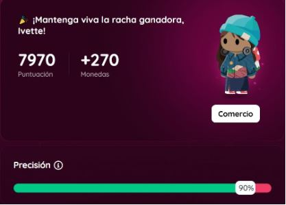
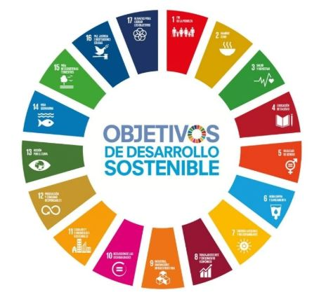
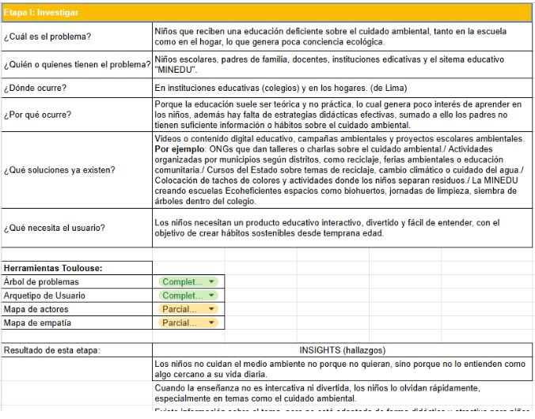
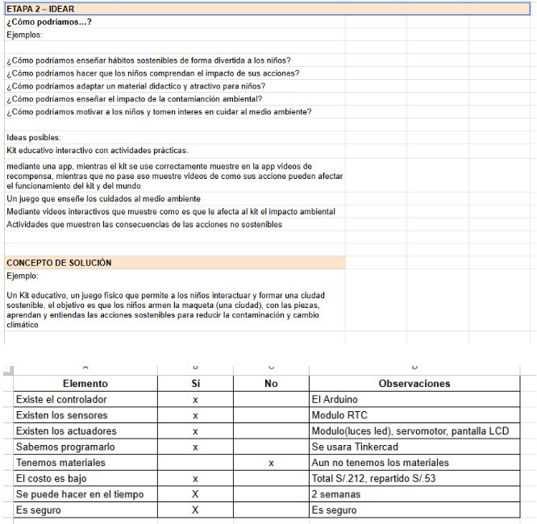
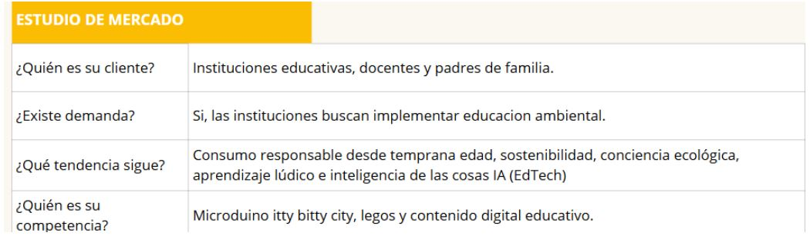
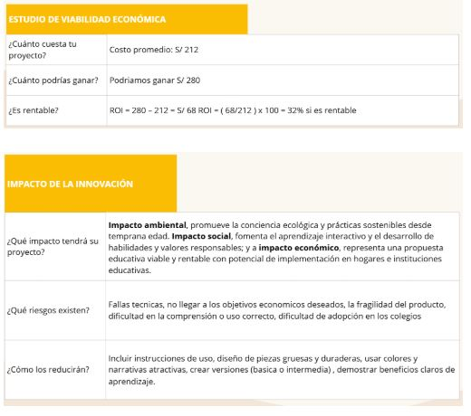
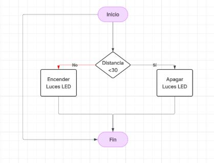
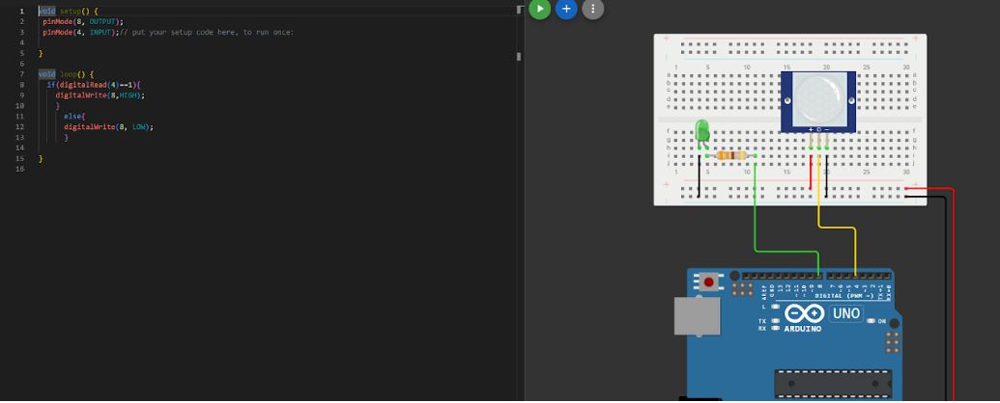
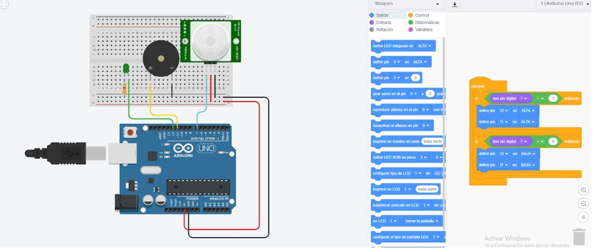

Diseño Gráfico
Soy estudiante de diseño gráfico, actualmente estoy cursando el 7mo ciclo, y a lo largo de mi formación he desarrollado una fuerte conexión con la creatividad y la comunicación visual. Me apasiona transformar ideas en propuestas gráficas que logren transmitir mensajes de manera clara y atractiva. Durante mi etapa académica, he trabajado en diversos proyectos que me han permitido explorar áreas como la identidad visual, el diseño editorial y el contenido digital. Disfruto especialmente el proceso creativo, me encanta hacer bocetos y que fluyan varias ideas hasta llegar al objetivo. Además, me apasiona dibujar, es una de las formas en las que me expreso de manera más personal. También me gustan mucho los gatos; tengo uno llamado Mango que me ayuda en mi travesia. En este ciclo, busco seguir fortaleciendo mis habilidades y espero encontrar un estilo propio como diseñadora, creando propuestas visuales innovadoras y con identidad.
Este curso se desarrolla en un entorno de laboratorio de innovación, donde se trabaja en la creación de soluciones a problemáticas reales mediante el desarrollo de proyectos innovadores. A lo largo del ciclo, se aplican diversas metodologías de investigación para comprender al usuario y su contexto, lo que permite plantear propuestas más efectivas.
Durante mi primera semana de clases en este curso, tuve dos sesiones: una virtual y otra presencial. En la clase virtual, se realizó una introducción general al curso, donde se explicaron los objetivos, la metodología de trabajo y los criterios de evaluación. Además, se retomaron conceptos del LAB 1 mediante un Quiz, lo cual fue útil para reforzar conocimientos previos. En la sesión virtual se abordó el enfoque del curso hacia el desarrollo de proyectos relacionados con websites, y se explicaron los cuatro ejes de la transformación digital.En la clase presencial, se inició con una dinámica de presentación, donde cada estudiante compartió información personal como su nombre, carrera, intereses y situación laboral. Posteriormente, se conformaron los grupos de trabajo; en mi caso, me integré con nuevaos compañeros para completar el equipo. Luego, cada grupo discutió qué proyecto de LAB 1 se continuaría desarrollando en LAB 2. En nuestro caso, evaluamos las propuestas y decidimos trabajar con la idea de otro grupo por considerarla más viable. A partir de ello, revisamos la información existente y detectamos que faltaba desarrollar el árbol de problemas. Sin embargo, ya contábamos con tres Objetivos de Desarrollo Sostenible (ODS) bien definidos, lo que facilitó la estructuración del trabajo. Finalmente, una integrante del grupo presentó enfrente a clase un avance que incluía la introducción del proyecto, la justificación de los ODS seleccionados y el árbol de problemas. Además, el docente explicó cómo elaborar la bitácora del curso y mencionó herramientas tecnológicas que se utilizarán, así como el uso de Google Sites para su desarrollo.


Durante la segunda semana del proyecto, el equipo se enfocó en la etapa de investigación, la cual tuvo como objetivo comprender de manera más profunda el problema a abordar y el contexto en el que se desarrolla. En primer lugar, se trabajó de manera colaborativa en un documento de Excel, donde se organizaron los principales aspectos del problema: a quién está dirigido, dónde ocurre, por qué sucede y qué soluciones existen actualmente. Este análisis permitió identificar las necesidades del usuario y delimitar mejor el enfoque del proyecto.Asimismo, se aplicaron diversas herramientas de investigación como el árbol de problemas, el arquetipo de usuario, el mapa de actores y el mapa de empatía. Estas herramientas ayudaron a visualizar tanto las causas como las consecuencias del problema, así como a comprender las emociones, comportamientos y necesidades del usuario. A partir de este proceso, se lograron identificar insights relevantes que aportaron valor al desarrollo del proyecto. Después, se dio inicio a la etapa de ideación, en la cual el equipo planteó diversas preguntas orientadas a generar posibles soluciones. Se exploraron distintas ideas que respondieran al problema identificado, buscando propuestas innovadoras y viables. Como resultado, se comenzó a definir el concepto inicial de la solución. Finalmente, se evaluaron los recursos necesarios para llevar a cabo la propuesta, considerando aspectos como los materiales a utilizar, la disponibilidad de tecnologías (sensores, actuadores, controladores), el conocimiento en programación, el presupuesto estimado, el tiempo de desarrollo y la seguridad del proyecto. Este análisis permitió tener una visión más realista sobre la factibilidad de la solución planteada.


Durante la tercera semana, el trabajo se dividió en actividades virtuales y presenciales, abordando tanto el análisis estratégico del proyecto como la introducción a herramientas tecnológicas. En la sesión virtual, el equipo desarrolló tres aspectos clave. En primer lugar, el estudio de mercado, donde se analizó quién es el cliente objetivo, si existe una demanda real para la solución propuesta, las tendencias actuales relacionadas al problema y la competencia existente. Este análisis permitió entender mejor el entorno en el que se insertará el proyecto.En segundo lugar, se trabajó el estudio de viabilidad económica, evaluando los costos de desarrollo del proyecto, los posibles ingresos y la relación entre inversión y beneficio. Esto ayudó a determinar si la propuesta es económicamente sostenible. Finalmente, se desarrolló el impacto de innovación, analizando cómo el proyecto podría generar valor en tres dimensiones: impacto ambiental, impacto social e impacto económico. Además, se reflexionó sobre la posibilidad de reproducir o escalar la solución en otros contextos, lo cual permitió proyectar su alcance a futuro.En la sesión presencial, se realizó una revisión del estudio de mercado junto con el profesor, quien brindó retroalimentación a cada grupo. El proyecto fue expuesto en pantalla, y en el caso del equipo, se validó que el análisis estaba correctamente desarrollado. Posteriormente, se llevaron a cabo ejercicios prácticos en Tinkercad. Primero, se trabajó con el uso de multímetros para medir variables eléctricas como voltaje y corriente, lo que permitió comprender mejor el comportamiento de los circuitos. Luego, se realizó una práctica con un sensor PIR, integrando resistencias y otros componentes básicos, con el objetivo de familiarizarse con sensores de movimiento y su aplicación en proyectos electrónicos.


Durante la cuarta semana, nos enfocamos principalmente en la comprensión de la lógica de programación mediante el uso de diagramas de flujo y su aplicación en simulaciones del prototipo. En la sesión virtual, se aprendió a utilizar diagramas de flujo como herramienta para representar de manera visual el funcionamiento del sistema. A través de estos, se pudo estructurar la lógica del proyecto antes de programarlo. Se realizó un ejercicio donde se planteó una condición basada en la distancia detectada por un sensor: si la distancia era menor a 30, se ejecutaba una acción, y si era mayor, se ejecutaba otra. Esto permitió entender cómo funcionan las decisiones dentro de un programa.En el caso del proyecto, se desarrolló un diagrama de flujo donde se definió que, al iniciar el sistema, se evalúa la distancia detectada: si no cumple la condición (es decir, si no es menor a 30), se encienden las luces LED; mientras que si la condición sí se cumple, las luces se apagan. Este esquema ayudó a visualizar claramente la lógica de funcionamiento del prototipo. Posteriormente, se trabajó con la herramienta de simulación Wokwi, donde se llevó esta lógica a un entorno más práctico. Se realizó un ejercicio, que consistía en seguir paso a paso el comportamiento del sistema según el diagrama planteado, permitiendo verificar si la lógica era correcta antes de implementarla físicamente. En la sesión presencial, se continuó trabajando con Wokwi, reforzando la simulación del circuito y la programación. Además, se realizó una revisión del proyecto, donde se evaluó si estaban correctamente definidos los componentes a utilizar, como sensores y actuadores. En el caso del equipo, se recibió una corrección relacionada con el sensor seleccionado, mientras que el resto del planteamiento fue validado positivamente. Finalmente, el profesor nos dio retroalimentación individual.


Durante la quinta semana, el trabajo se dividió entre actividades virtuales y presenciales, enfocándose en la consolidación técnica del proyecto y su presentación final. En la sesión virtual, se realizó un ejercicio en Tinkercad utilizando un sensor de movimiento. En esta actividad, se trabajó con programación en bloques, lo que permitió comprender de manera más visual e intuitiva cómo funciona la lógica del sistema. A través de esta simulación, se logró programar el comportamiento del sensor y su interacción con otros componentes, reforzando los conocimientos adquiridos en semanas anteriores sobre sensores y automatización.Posteriormente, el docente realizó una revisión general del proyecto del equipo, evaluando tanto la parte conceptual como técnica. En este caso, se indicó que el desarrollo del proyecto estaba correctamente planteado, sin observaciones mayores. En la sesión presencial, se llevó a cabo la exposición del proyecto, donde el equipo presentó de manera integral todos los aspectos desarrollados. Se explicó la problemática, los datos estadísticos, las consecuencias y la solución propuesta. Asimismo, se abordaron elementos estratégicos como la misión, visión, el público objetivo, el arquetipo y la propuesta de valor. También se incluyó el análisis del triple balance (impacto social, ambiental y económico) y la relación con los Objetivos de Desarrollo Sostenible (ODS). En la parte técnica, se presentaron los componentes del prototipo y el diagrama pictórico que representaba su funcionamiento. Finalmente, se compartieron las conclusiones del proyecto. Al finalizar la exposición, el docente realizó una pregunta a cada integrante del grupo, evaluando la comprensión individual del proyecto. Cada miembro respondió de manera adecuada, cerrando así el promedio 1.
